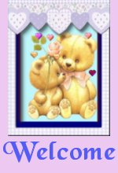
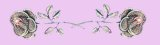

|
 To a list of poems I've written over the last few months. These poems are dedicated to the wonderful friends I've met online and who are always there for me when I need them. I believe they're angels sent by God to help me and I thank each and every one from the bottom of my heart. 
Please
don't forget to sign my guestbook.
The
bear tube used here came from Jan's.
|